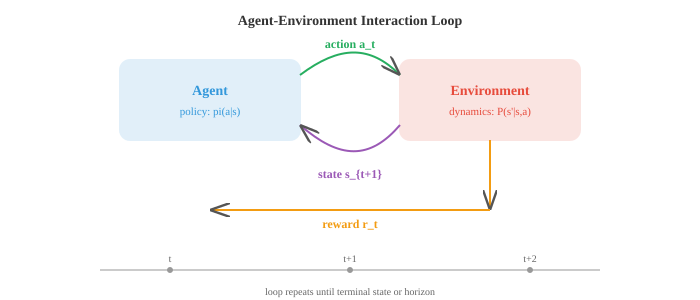
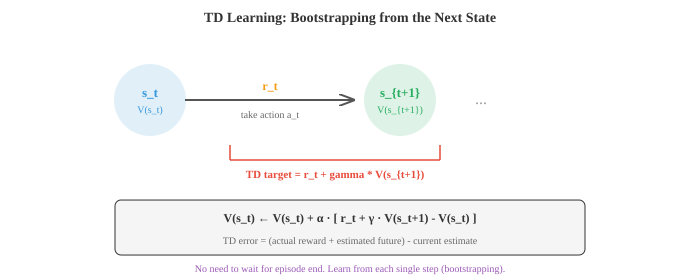

Reinforcement Learning¶
Reinforcement learning trains agents to make sequential decisions by maximising cumulative reward through trial and error. This file covers MDPs, value functions, Bellman equations, Q-learning, policy gradients, actor-critic methods, PPO, and RLHF, the framework behind game-playing agents and language model alignment.
-
Supervised learning needs labelled data. Unsupervised learning finds patterns in unlabelled data. Reinforcement learning (RL) is different from both: an agent learns by interacting with an environment, taking actions, and receiving rewards. There are no correct labels; the agent must discover good behaviour through trial and error.
-
Think of teaching a dog a new trick. You do not show it a dataset of correct behaviours. Instead, it tries things, you give treats for good actions, and over time it figures out what you want. RL formalises this process.
-
The RL setup has five core components. The agent is the learner and decision-maker. The environment is everything outside the agent that it interacts with. At each time step, the agent observes a state \(s_t\), chooses an action \(a_t\), receives a reward \(r_t\), and transitions to a new state \(s_{t+1}\). The agent's goal is to maximise the total reward it collects over time.

-
A policy \(\pi\) is the agent's strategy: a mapping from states to actions. A deterministic policy gives one action per state: \(a = \pi(s)\). A stochastic policy gives a probability distribution over actions: \(\pi(a \mid s)\). The goal of RL is to find the optimal policy, the one that maximises expected cumulative reward.
-
The mathematical framework for RL is the Markov Decision Process (MDP), defined by a tuple \((S, A, P, R, \gamma)\): a set of states \(S\), a set of actions \(A\), transition probabilities \(P(s' \mid s, a)\), a reward function \(R(s, a)\), and a discount factor \(\gamma\).
-
The Markov property (from chapter 05) says the future depends only on the current state, not on the history of how you got there: \(P(s_{t+1} \mid s_t, a_t, s_{t-1}, \ldots) = P(s_{t+1} \mid s_t, a_t)\). This means the state contains all the information needed to make a decision.
-
The discount factor \(\gamma \in [0, 1)\) determines how much the agent cares about future rewards versus immediate ones. The discounted return from time \(t\) is:
-
With \(\gamma = 0\), the agent is completely myopic, caring only about the next reward. With \(\gamma\) close to 1, the agent is far-sighted. The discount factor also ensures the sum converges (if rewards are bounded), which is important for mathematical well-definedness.
-
Value functions estimate how good it is to be in a state (or to take an action in a state). The state-value function \(V^\pi(s)\) is the expected return starting from state \(s\) and following policy \(\pi\):
- The action-value function \(Q^\pi(s, a)\) is the expected return starting from state \(s\), taking action \(a\), and then following \(\pi\):
-
The relationship: \(V^\pi(s) = \sum_a \pi(a \mid s) \, Q^\pi(s, a)\). The state value is the average of action values, weighted by the policy.
-
The Bellman equation expresses a recursive relationship: the value of a state equals the immediate reward plus the discounted value of the next state. For the state-value function:
- For the optimal value function \(V^{*}(s)\), the agent always picks the best action:
- Similarly, the Bellman optimality equation for \(Q^{*}\):
-
Once you have \(Q^{*}\), the optimal policy is trivial: always pick the action with the highest Q-value: \(\pi^{*}(s) = \arg\max_a Q^{*}(s, a)\).
-
Dynamic programming methods solve MDPs when you know the transition probabilities and rewards (the full model). Policy evaluation computes \(V^\pi\) for a given policy by iteratively applying the Bellman equation until convergence. Policy improvement takes the value function and constructs a better policy by acting greedily: \(\pi'(s) = \arg\max_a \sum_{s'} P(s' \mid s, a)[R(s,a) + \gamma V^\pi(s')]\).
-
Policy iteration alternates between evaluation and improvement until the policy stops changing. It is guaranteed to converge to the optimal policy.
-
Value iteration combines both steps into one: it repeatedly applies the Bellman optimality equation until \(V^{*}\) converges, then extracts the policy.
-
Dynamic programming requires knowing \(P(s' \mid s, a)\), which is often impractical. In most real problems, the agent does not know the environment's dynamics; it can only interact with it. This is where model-free methods come in.
-
Temporal Difference (TD) learning learns from experience without knowing the model. The key idea is bootstrapping: instead of waiting until the end of an episode to compute the actual return \(G_t\), you estimate it using the current value function:
- The term in brackets is the TD error: the difference between the TD target (\(r_t + \gamma V(s_{t+1})\)) and the current estimate \(V(s_t)\). If the TD error is positive, the state was better than expected, so we increase its value. If negative, we decrease it.

-
TD learning updates after every single step (not after complete episodes), which makes it much more efficient than Monte Carlo methods. It also works in continuing (non-episodic) environments.
-
SARSA (State-Action-Reward-State-Action) is TD learning applied to Q-values. The agent takes action \(a\) in state \(s\), observes reward \(r\) and next state \(s'\), then chooses next action \(a'\) according to its policy:
-
SARSA is on-policy: it updates using the action the agent actually takes, which includes exploration. This makes SARSA more conservative; it learns a policy that accounts for its own exploration noise.
-
Q-learning is the most famous RL algorithm. It is like SARSA, but instead of using the action the agent actually takes, it uses the best possible action:
-
Q-learning is off-policy: it learns the optimal Q-values regardless of the policy being followed. The agent can explore randomly while still learning the optimal action values. This makes Q-learning more aggressive and often faster to converge, but it can overestimate values.
-
Exploration vs exploitation is the fundamental dilemma: should the agent exploit what it already knows (choose the action with the highest estimated value) or explore unknown actions (which might turn out to be better)?
-
The simplest strategy is epsilon-greedy: with probability \(\epsilon\), take a random action (explore); with probability \(1 - \epsilon\), take the greedy action (exploit). A common schedule starts with high \(\epsilon\) (lots of exploration) and decays it over time.
-
Tabular methods (storing a value for each state-action pair in a table) work for small, discrete state spaces. For large or continuous state spaces, you need function approximation. Deep Q-Networks (DQN) use a neural network to approximate \(Q(s, a; \theta)\), where \(\theta\) are the network weights.
-
DQN introduced two critical stabilisation techniques. Experience replay: instead of learning from consecutive transitions (which are highly correlated), store transitions in a replay buffer and sample random mini-batches for training. This breaks correlations and reuses data efficiently.
-
Target network: use a separate, slowly-updated copy of the network to compute TD targets. Without this, the target moves every time you update the network, creating a "chasing your own tail" instability. The target network is updated periodically (hard update every \(N\) steps) or continuously (soft update: \(\theta^{-} \leftarrow \tau\theta + (1-\tau)\theta^{-}\)).
-
The DQN loss is just MSE between predicted Q-values and TD targets:
-
All the methods so far learn value functions and derive policies from them. Policy gradient methods take a different approach: they directly parameterise the policy \(\pi(a \mid s; \theta)\) and optimise it by gradient ascent on expected return.
-
The policy gradient theorem gives the gradient of expected return with respect to policy parameters:
-
This says: increase the probability of actions that led to high returns, decrease the probability of actions that led to low returns. The log-probability gradient gives the direction to change the policy, and \(G_t\) scales how much to change it.
-
REINFORCE is the simplest policy gradient algorithm. Run an episode, compute returns \(G_t\) for each step, and update:
- REINFORCE has high variance because \(G_t\) is a noisy, single-sample estimate of the expected return. A common fix is to subtract a baseline (typically the average return or a learned value function) to reduce variance without introducing bias:
- Actor-Critic methods use two networks. The actor is the policy \(\pi(a \mid s; \theta)\). The critic is a value function \(V(s; \phi)\) that serves as the baseline. The advantage \(A_t = r_t + \gamma V(s_{t+1}) - V(s_t)\) replaces \(G_t - b\):
- The critic is updated by minimising TD error, just like value-based methods. The actor is updated using the policy gradient, with the critic's advantage estimate reducing variance. This is the best of both worlds.

-
PPO (Proximal Policy Optimization) is the most widely used policy gradient algorithm in practice. It addresses a key problem: if a policy update is too large, performance can collapse catastrophically.
-
PPO uses a clipped surrogate objective. Let \(r_t(\theta) = \frac{\pi(a_t | s_t; \theta)}{\pi(a_t | s_t; \theta_{\text{old}})}\) be the probability ratio between new and old policies. The loss is:
-
The clipping (typically \(\epsilon = 0.2\)) prevents the ratio from moving too far from 1, which keeps updates small and stable. If the advantage is positive (action was good), the ratio is capped at \(1 + \epsilon\). If negative (action was bad), the ratio is capped at \(1 - \epsilon\). This is simpler and more stable than earlier trust-region methods (TRPO).
-
PPO is what was used to train ChatGPT-style models via RLHF (Reinforcement Learning from Human Feedback). In RLHF, a reward model is trained on human preference data (which of two outputs do humans prefer?), and then PPO optimises the language model's policy to maximise this learned reward.
-
DPO (Direct Preference Optimization) simplifies RLHF by eliminating the reward model entirely. Instead of training a reward model and then running RL, DPO derives a closed-form loss that directly optimises the policy from preference data:
-
Here \(y_w\) is the preferred (winning) response and \(y_l\) is the dispreferred (losing) response. DPO increases the relative probability of preferred outputs and is much simpler to implement than PPO-based RLHF.
-
Two important distinctions in RL algorithms. On-policy vs off-policy: on-policy methods (SARSA, PPO) learn from data generated by the current policy; off-policy methods (Q-learning, DQN) can learn from data generated by any policy. Off-policy methods are more sample-efficient (they reuse old data) but can be less stable.
-
Model-based vs model-free: model-free methods (everything discussed so far) learn values or policies directly from experience. Model-based methods learn a model of the environment (\(P(s' \mid s, a)\) and \(R(s, a)\)) and use it for planning (imagining future trajectories without actually taking actions). Model-based methods are more sample-efficient but add the complexity of learning an accurate model.
-
To summarise the RL landscape:
| Method | Type | Key Idea | Strength |
|---|---|---|---|
| Value Iteration | DP, model-based | Bellman optimality | Exact solution (small MDPs) |
| SARSA | TD, on-policy | Learn Q on-policy | Conservative, safe |
| Q-Learning | TD, off-policy | Learn Q*, greedy target | Simple, effective |
| DQN | Deep, off-policy | Neural Q + replay + target net | Scales to high-dim states |
| REINFORCE | Policy gradient | Gradient of log-prob * return | Simple policy optimisation |
| Actor-Critic | PG + value | Actor + critic for low variance | Practical and flexible |
| PPO | PG, clipped | Trust-region-like stability | Industry standard |
| DPO | Direct preference | Skip reward model | Simpler RLHF |
Coding Tasks (use CoLab or notebook)¶
-
Implement value iteration for a simple gridworld. Compute the optimal value function and extract the optimal policy. Visualise both as a heatmap and arrow plot.
import jax.numpy as jnp import matplotlib.pyplot as plt # 4x4 gridworld: goal at (3,3), reward -1 per step, 0 at goal grid_size = 4 gamma = 0.99 goal = (3, 3) # Actions: up, down, left, right actions = [(-1, 0), (1, 0), (0, -1), (0, 1)] action_names = ['up', 'down', 'left', 'right'] action_arrows = ['\u2191', '\u2193', '\u2190', '\u2192'] def step(s, a): """Deterministic transition.""" ns = (max(0, min(grid_size-1, s[0]+a[0])), max(0, min(grid_size-1, s[1]+a[1]))) return ns # Value iteration V = jnp.zeros((grid_size, grid_size)) for iteration in range(100): V_new = jnp.array(V) for i in range(grid_size): for j in range(grid_size): if (i, j) == goal: continue values = [] for a in actions: ns = step((i, j), a) values.append(-1 + gamma * float(V[ns[0], ns[1]])) V_new = V_new.at[i, j].set(max(values)) if jnp.max(jnp.abs(V_new - V)) < 1e-6: print(f"Converged in {iteration+1} iterations") break V = V_new # Extract policy policy = [['' for _ in range(grid_size)] for _ in range(grid_size)] for i in range(grid_size): for j in range(grid_size): if (i, j) == goal: policy[i][j] = 'G' continue best_a = max(range(4), key=lambda a: -1 + gamma * float(V[step((i,j), actions[a])[0], step((i,j), actions[a])[1]])) policy[i][j] = action_arrows[best_a] fig, axes = plt.subplots(1, 2, figsize=(10, 4)) im = axes[0].imshow(V, cmap='YlOrRd_r') axes[0].set_title("Optimal Value Function") for i in range(grid_size): for j in range(grid_size): axes[0].text(j, i, f"{V[i,j]:.1f}", ha='center', va='center', fontsize=10) plt.colorbar(im, ax=axes[0]) axes[1].imshow(jnp.ones((grid_size, grid_size)), cmap='Greys', vmin=0, vmax=2) axes[1].set_title("Optimal Policy") for i in range(grid_size): for j in range(grid_size): axes[1].text(j, i, policy[i][j], ha='center', va='center', fontsize=18) plt.tight_layout(); plt.show() -
Implement tabular Q-learning on a simple gridworld. Train the agent, plot the learning curve, and show the learned Q-values.
import jax import jax.numpy as jnp import matplotlib.pyplot as plt grid_size = 5 goal = (4, 4) actions = [(-1,0), (1,0), (0,-1), (0,1)] # Q-table Q = {} for i in range(grid_size): for j in range(grid_size): Q[(i,j)] = [0.0] * 4 alpha = 0.1 gamma = 0.95 epsilon = 1.0 epsilon_decay = 0.995 min_epsilon = 0.01 def step(s, a_idx): a = actions[a_idx] ns = (max(0, min(grid_size-1, s[0]+a[0])), max(0, min(grid_size-1, s[1]+a[1]))) r = 0.0 if ns == goal else -1.0 done = ns == goal return ns, r, done key = jax.random.PRNGKey(42) rewards_per_episode = [] for ep in range(500): s = (0, 0) total_reward = 0 for _ in range(100): key, subkey = jax.random.split(key) if float(jax.random.uniform(subkey)) < epsilon: key, subkey = jax.random.split(key) a = int(jax.random.randint(subkey, (), 0, 4)) else: a = max(range(4), key=lambda i: Q[s][i]) ns, r, done = step(s, a) total_reward += r # Q-learning update Q[s][a] += alpha * (r + gamma * max(Q[ns]) - Q[s][a]) s = ns if done: break rewards_per_episode.append(total_reward) epsilon = max(min_epsilon, epsilon * epsilon_decay) plt.figure(figsize=(8, 4)) # Smooth the curve window = 20 smoothed = [sum(rewards_per_episode[max(0,i-window):i+1])/min(i+1, window) for i in range(len(rewards_per_episode))] plt.plot(smoothed, color='#3498db', linewidth=1.5) plt.xlabel("Episode"); plt.ylabel("Total Reward (smoothed)") plt.title("Q-Learning on Gridworld") plt.grid(alpha=0.3); plt.show() # Show learned policy arrow = ['\u2191', '\u2193', '\u2190', '\u2192'] print("Learned policy:") for i in range(grid_size): row = "" for j in range(grid_size): if (i,j) == goal: row += " G " else: row += f" {arrow[max(range(4), key=lambda a: Q[(i,j)][a])]} " print(row) -
Implement REINFORCE on a multi-armed bandit problem. Show how the policy evolves over training to favour the best arm.
import jax import jax.numpy as jnp import matplotlib.pyplot as plt # 5-armed bandit with different expected rewards true_rewards = jnp.array([0.2, 0.5, 0.8, 0.3, 0.1]) n_arms = len(true_rewards) # Policy: softmax over logits logits = jnp.zeros(n_arms) lr = 0.1 key = jax.random.PRNGKey(42) policy_history = [] reward_history = [] for step in range(2000): probs = jax.nn.softmax(logits) policy_history.append(probs) # Sample action key, subkey = jax.random.split(key) action = jax.random.choice(subkey, n_arms, p=probs) # Get reward (Bernoulli) key, subkey = jax.random.split(key) reward = float(jax.random.uniform(subkey) < true_rewards[action]) reward_history.append(reward) # REINFORCE update # grad log pi(a) = e_a - probs (for softmax parameterisation) grad_log_pi = -probs.at[action].add(1.0) # one-hot(a) - probs logits = logits + lr * reward * grad_log_pi policy_history = jnp.stack(policy_history) fig, axes = plt.subplots(1, 2, figsize=(12, 4)) colors = ['#3498db', '#e74c3c', '#27ae60', '#9b59b6', '#f39c12'] for i in range(n_arms): axes[0].plot(policy_history[:, i], color=colors[i], label=f'Arm {i} (true={true_rewards[i]:.1f})', linewidth=1.5) axes[0].set_xlabel("Step"); axes[0].set_ylabel("P(arm)") axes[0].set_title("Policy Evolution (REINFORCE)") axes[0].legend(fontsize=8); axes[0].grid(alpha=0.3) # Smoothed reward window = 50 smoothed = [sum(reward_history[max(0,i-window):i+1])/min(i+1,window) for i in range(len(reward_history))] axes[1].plot(smoothed, color='#27ae60', linewidth=1.5) axes[1].axhline(y=0.8, color='#e74c3c', linestyle='--', alpha=0.5, label='Best arm') axes[1].set_xlabel("Step"); axes[1].set_ylabel("Avg Reward") axes[1].set_title("Reward Over Time"); axes[1].legend() axes[1].grid(alpha=0.3) plt.tight_layout(); plt.show()